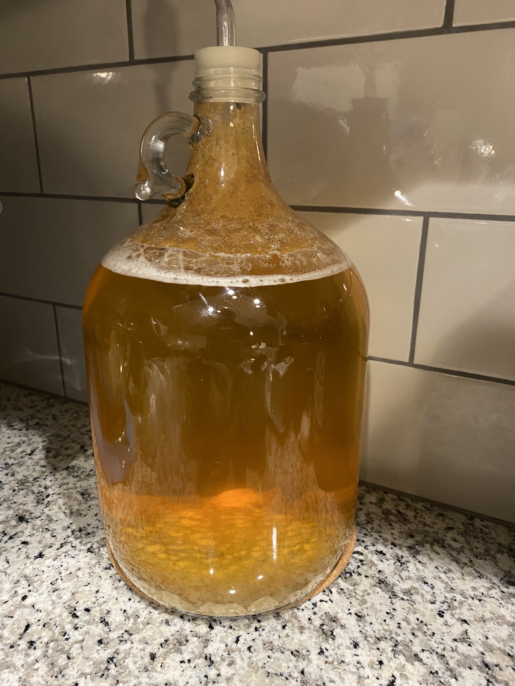

Mead

Homemade Cyser Mead
Making mead at home is simple. All it takes is three basic ingredients: honey,
water, and yeast. You can make mead more complex by adding different fruits, grains, herbs,
and other flavorings. One special kind of mead is called Cyser, which
is a mead that replaces water with apple juice.
Ingredients
- 3 pounds raw, unfiltered honey
- 1 packet of Lalvin D47 yeast
- 0.5 teaspoon yeast nutrient
- 0.25 teaspoon yeast energizer
- Enough fresh pressed apple juice to make 1 gallon with all ingredients combined
Steps
- Add honey to a clean 1 gallon glass carboy
- Pour in some apple juice until half the carboy is filled
- Put a lid on the carboy and shake until the honey is dissolved
- Add more apple juice until the carboy is almost filled, leaving several inches of headspace
- Add in the yeast nutrient, yeast energizer, and Lalvin D47 yeast
- Shake again to combine and put an airlock on the carboy
- Fermentation will start within a day and the airlock will bubble
- Once bubbling has finished, wait 1 week before bottling
- Drink right away or let age for however long you like. Either way, Enjoy!